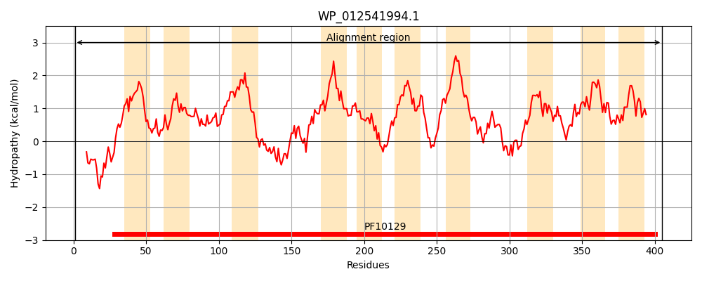
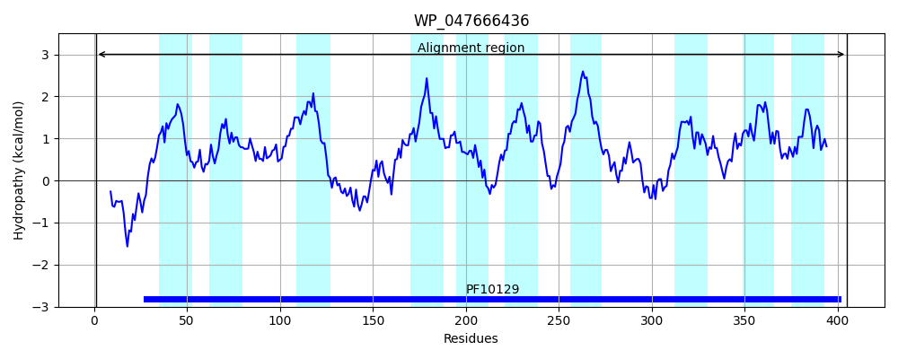
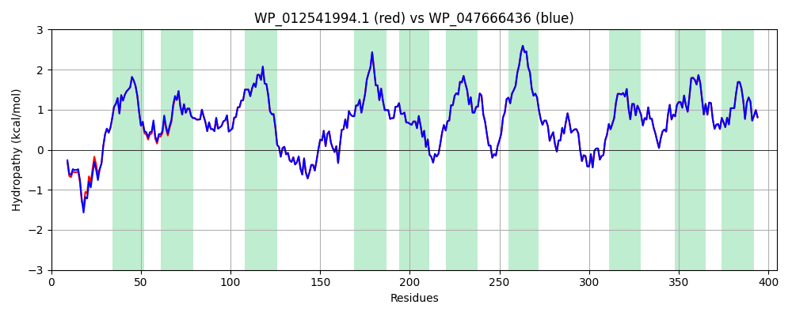

Hit Accession: WP_047666436
Hit TCID: 9.B.97.8.4
Hit Description: gnl|BL_ORD_ID|21120 gnl|TC-DB|WP_047666436.1|9.B.97.8.4 OpgC protein [Klebsiella pneumoniae]
Mach Len: 405
e:0.000000
Query TMS Count : 10
Hit TMS Count: 10
TMS-Overlap Score: 9.350000
Predicted Substrates:None
BLAST Alignment:
Score: 2138 , Bit scores: 828 bits, E-value: 0.0e+00, Alignment length: 405, Percentage identity: 99
Query: 1 MSQVASAISQKETDKSIAWRYSLAGERDLRIDFMRGIALVMMVVAHTEVMSIFNIFSWERFGLTTGAEGFVILSGFMLGMLNRVRLQKAVLLTVGWGLYLRAWKIYQVNIIIIVSFLLLRYFPFINAFEVTHFTDRFSGTSWSLYPLTPQIKETWFNIILYLQIGPHQTQILGLYIFLLLLSPLFLGMLQKGHVYPLLGVSLLIYGCWQRWPVRVTPCEFEFAFPLLAWQFIFVLGMCCGWYKAELISFARTPPGKVAVAALVFIALILAFVAQNHTNPFMPPALLMHVIPPAEFNAFYHTWAAKNGLGPVRILNDISLMVTIYLLLTWCWRPLNWLAGWFLIPLGQRSLYTFILHVYIVLAVSQLVTFDLWHQAWIVNTLIHAAALGVLWLMAKYRVAARWIPN 405
MSQVASAI QKETDKSI WRYSLAGERDLRIDFMRGIALVMMVVAHTEVMSIFNIFSWER GLTTGAEGFVILSGFMLGMLNRVRLQKAVLLTVGWGLYLRAWKIYQVNIIIIVSFLLLRYFPFINAFEVTHFTDRFSGTSWSLYPLTPQIKETWFNIILYLQIGPHQTQILGLYIFLLLLSPLFLGMLQKGHVYPLLGVSLLIYGCWQRWPVRVTPCEFEFAFPLLAWQFIFVLGMCCGWYKAELISFARTPPGKVAVAALVFIALILAFVAQNHTNPFMPPALLMHVIPPAEFNAFYHTWAAKNGLGPVRILNDISLMVTIYLLLTWCWRPLNWLAGWFLIPLGQRSLYTFILHVYIVLAVSQLVTFDLWHQAWIVNTLIHAAALGVLWLMAKYRVAARWIPN
Sbjct: 1 MSQVASAIFQKETDKSITWRYSLAGERDLRIDFMRGIALVMMVVAHTEVMSIFNIFSWERLGLTTGAEGFVILSGFMLGMLNRVRLQKAVLLTVGWGLYLRAWKIYQVNIIIIVSFLLLRYFPFINAFEVTHFTDRFSGTSWSLYPLTPQIKETWFNIILYLQIGPHQTQILGLYIFLLLLSPLFLGMLQKGHVYPLLGVSLLIYGCWQRWPVRVTPCEFEFAFPLLAWQFIFVLGMCCGWYKAELISFARTPPGKVAVAALVFIALILAFVAQNHTNPFMPPALLMHVIPPAEFNAFYHTWAAKNGLGPVRILNDISLMVTIYLLLTWCWRPLNWLAGWFLIPLGQRSLYTFILHVYIVLAVSQLVTFDLWHQAWIVNTLIHAAALGVLWLMAKYRVAARWIPN 405 | Protein Hydropathy Plots: |
|---|
|  |  |
Pairwise Alignment-Hydropathy Plot:
|
|---|
|  |